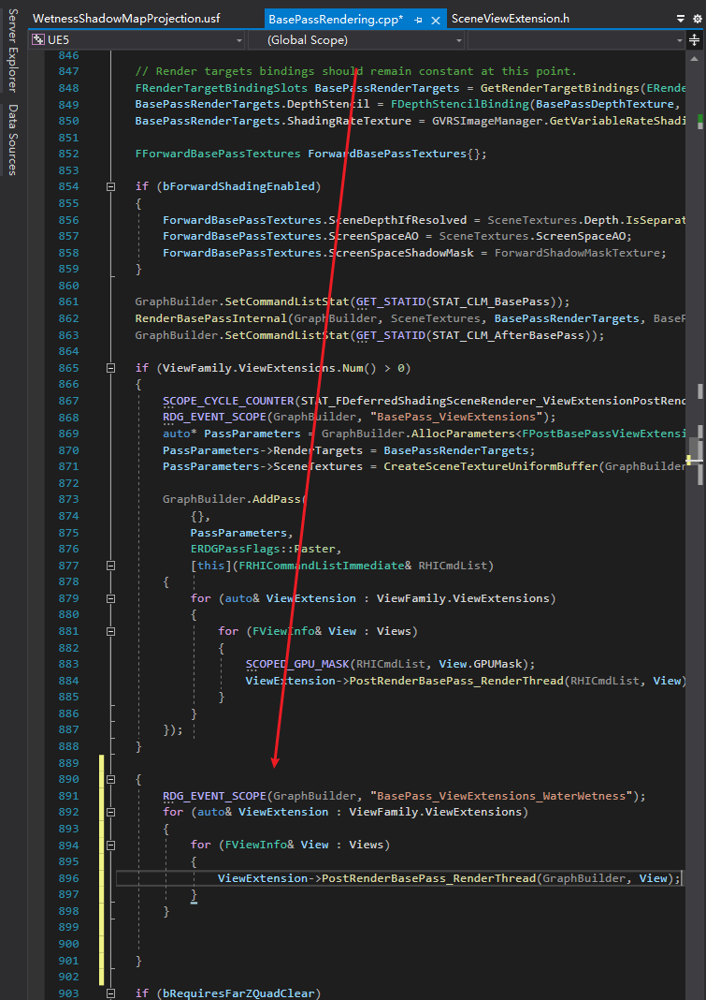
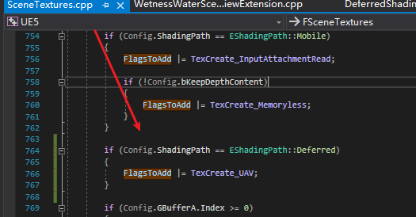
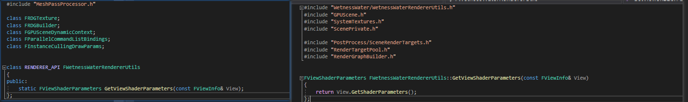
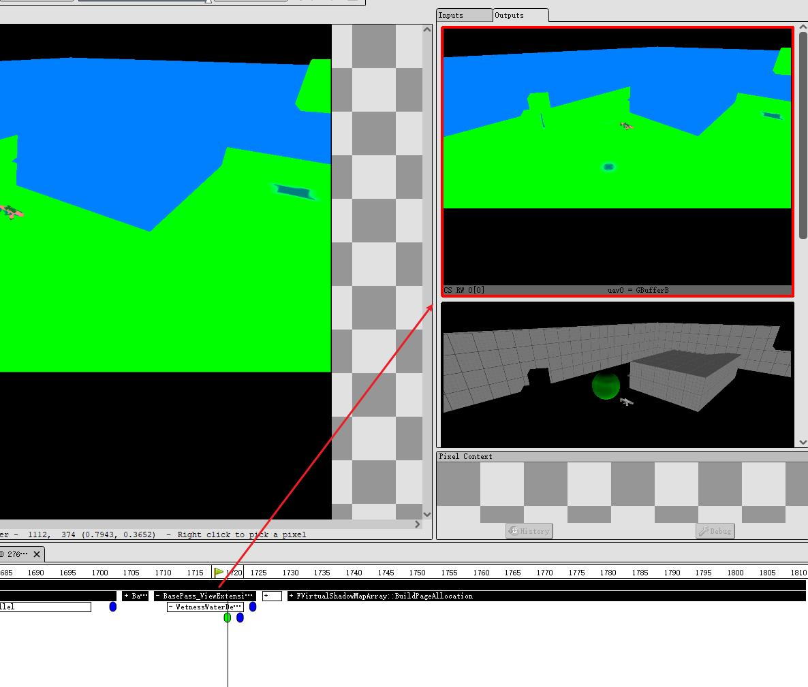

使用插件修改UE5渲染管线 笔者最近需要在渲染管线中做相关GBuffer的修改处理，故笔者尝试使用UE的plugin插件来修改渲染管线，经过一周多的折腾研究，初步完成了拓展，故写下此篇笔记，希望对您有帮助。
在修改前我们需要先对引擎做一定拓展才方便我们读取到GBuffer相关数据。
扩展 Render Pipeline 打开ViewExtension 的 RDG 接口 需要修改引擎，开放GraphBuilder接口（此处需要手动添加）
渲染管线中添加对应RDG的渲染流程 
修改GBuffer的SceneTexture Flag 以便Compute Shader使用 
暴露引擎内部函数（可选） 在引擎中需要自己创建RENDERER_API类，并在该类中声明相关函数来调用引擎中的相关接口，从而实现在插件中调用引擎内部函数。（笔者需要调用到SceneView，所以创建了相应类后直接return）

至此，引擎侧的修改就OK了，接下来就是到Plugin侧做开发
逻辑层面 SceneViewExtensionBase 拓展UE底层渲染，笔者使用了FSceneViewExtensionBase这个类进行拓展。Scene View Extension是引擎提供的一个接口，原本设计是可以在后处理的某个pass后插入一个pass，其中就包括：
MotionBlur
Tonemap
FXAA
VisualizeDepthOfField
这四个阶段后插入pass。该接口只支持Deferred Shading Path。
在Deferred Shading Path中调用如下：
1 2 3 4 5 6 7 8 9 10 for (int32 ViewExt = 0 ; ViewExt < ViewFamily.ViewExtensions.Num (); ++ViewExt) { for (int32 ViewIndex = 0 ; ViewIndex < ViewFamily.Views.Num (); ++ViewIndex) { FViewInfo& View = Views[ViewIndex]; RDG_GPU_MASK_SCOPE (GraphBuilder, View.GPUMask); PostProcessingInputs.TranslucencyViewResourcesMap = FTranslucencyViewResourcesMap (TranslucencyResourceMap, ViewIndex); ViewFamily.ViewExtensions[ViewExt]->PrePostProcessPass_RenderThread (GraphBuilder, View, PostProcessingInputs); } }
在源码的Engine\Source\Runtime\Engine\Public\SceneViewExtension.h文件里，Epic在注释里给出了SceneViewExtension的推荐用法。这里我直接代入自己的代码做展示
首先要创建一个类，继承自FSceneViewExtensionBase。Note：第一个参数一定要是 FAutoRegister ，且要传递给 FSceneViewExtensionBase
1 2 3 4 5 6 7 class FWetnessWaterSceneViewExtension : public FSceneViewExtensionBase{ public : FWetnessWaterSceneViewExtension (const FAutoRegister& AutoRegister, UWetnessWaterSubsystem* InWorldSubsystem); }
1 2 3 4 5 FWetnessWaterSceneViewExtension::FWetnessWaterSceneViewExtension (const FAutoRegister& AutoRegister, UWetnessWaterSubsystem* InWorldSubsystem) : FSceneViewExtensionBase (AutoRegister), WetnessWaterSubsystem (InWorldSubsystem) { OwnerWorld = InWorldSubsystem->GetWorld (); }
然后继承ISceneViewExtension的5个纯虚函数。这里我创建多一个虚函数，方便后续操作及对应前面引擎侧的修改：
1 2 3 4 5 6 7 8 9 10 virtual void SetupViewFamily (FSceneViewFamily& InViewFamily) override virtual void SetupView (FSceneViewFamily& InViewFamily, FSceneView& InView) override virtual void BeginRenderViewFamily (FSceneViewFamily& InViewFamily) override virtual void PreRenderViewFamily_RenderThread (FRHICommandListImmediate& RHICmdList, FSceneViewFamily& InViewFamily) override virtual void PreRenderView_RenderThread (FRHICommandListImmediate& RHICmdList, FSceneView& InView) override virtual void PostRenderBasePass_RenderThread (FRDGBuilder& GraphBuilder, FSceneView& InView) override virtual void PostRenderBasePass_RenderThread (FRHICommandListImmediate& RHICmdList, FSceneView& InView) override virtual void PrePostProcessPass_RenderThread (FRDGBuilder& GraphBuilder, const FSceneView& View, const FPostProcessingInputs& Inputs) override
接下来是实现相关函数。需要具体实现 BeginRenderViewFamily 和 PostRenderBasePass_RenderThread（GraphBuilder）
BeginRenderViewFamily 函数主要负责SceneView相关初始化的参数设置。
PostRenderBasePass_RenderThread 主要负责SceneView的相关渲染逻辑，其中包括AddPass也在此实现
Shader处理 这里直接使用了ComputeShader进行处理，所以只讲如何从Gbuffer中读取出相关数据。
首先我们需要声明创建Global Shader，并在Shader Parameter 中预留给传入shader的GBuffer的RWTexture2D。
1 2 3 4 5 6 BEGIN_SHADER_PARAMETER_STRUCT (FParameters, ) SHADER_PARAMETER_RDG_TEXTURE_UAV (RWTexture2D<float4>, GBufferBRWTexture) SHADER_PARAMETER_RDG_TEXTURE_UAV (RWTexture2D<float4>, GBufferCRWTexture) (...) END_SHADER_PARAMETER_STRUCT ()
然后在前面提到的PostRenderBasePass_RenderThread 实现函数中，由GBuffer中创建对应的UAV来进行后续Compute Shader的处理。
1 PassParameters->GBufferBRWTexture = GraphBuilder.CreateUAV (FRDGTextureUAVDesc (SceneTextures.GBufferB,0 ));
并执行调用FComputeShaderUtils::AddPass操作将Compute Shader进行处理。
在Shader中执行相应的Encode和Decode操作及GBuffer修改后即可实现相关效果。
1 2 3 4 5 6 7 8 9 10 11 12 13 14 15 16 17 18 19 void ApplyRainWetness (inout FRainWetnessModifiedParams ModifiedParams, FGBufferData GBuffer, float Porosity, float Wetness, float WaterSpecular) ModifiedParams.BaseColor = GBuffer.BaseColor * lerp (1.0 , 0.25 , Wetness * Porosity * (1.0 - GBuffer.Metallic)); float Smoothness = 1.0 - GBuffer.Roughness; float BaseSmoothness = lerp (0.9 , 0.6 , Porosity); float SmoothnessAdjustment = lerp (-0.3 , 0.4 , sqrt (Smoothness)); float FinalSmoothness = saturate (BaseSmoothness + SmoothnessAdjustment); FinalSmoothness = clamp (FinalSmoothness, Smoothness, 0.9 ); Smoothness = lerp (Smoothness, FinalSmoothness, Wetness); ModifiedParams.Roughness = 1.0 - Smoothness; ModifiedParams.Specular = lerp (GBuffer.Specular, WaterSpecular, Wetness); ModifiedParams.WetnessShadow = Wetness; }
此处为Shader中修改的函数。
修改结果如下：

总结 本文只做指引，希望对各位有所帮助~
参考 分享UE4虚幻引擎中通过材质球修改管线GBuffer的插件
UE源码剖析 - Scene View Extension__子宽的博客-CSDN博客_ue源码剖析
ColorCorrectRegions插件